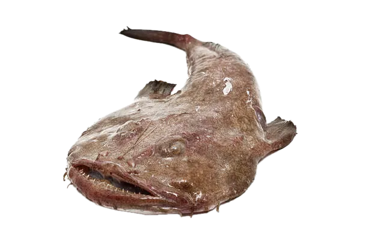

Deep-Sea Luminary
Anglerfish
Anglerfish thrive in the lightless depths, wielding a bioluminescent lure like a lantern to mesmerize prey. Their remarkable adaptations make them some of the most distinctive hunters in the abyss.
Interesting Facts
- The glowing lure, or esca, is home to symbiotic bacteria that produce light to attract prey.
- Flexible jaws and an expandable stomach let anglerfish swallow animals up to twice their size.
- In some species, tiny males permanently fuse to females, sharing nutrients in exchange for sperm.
